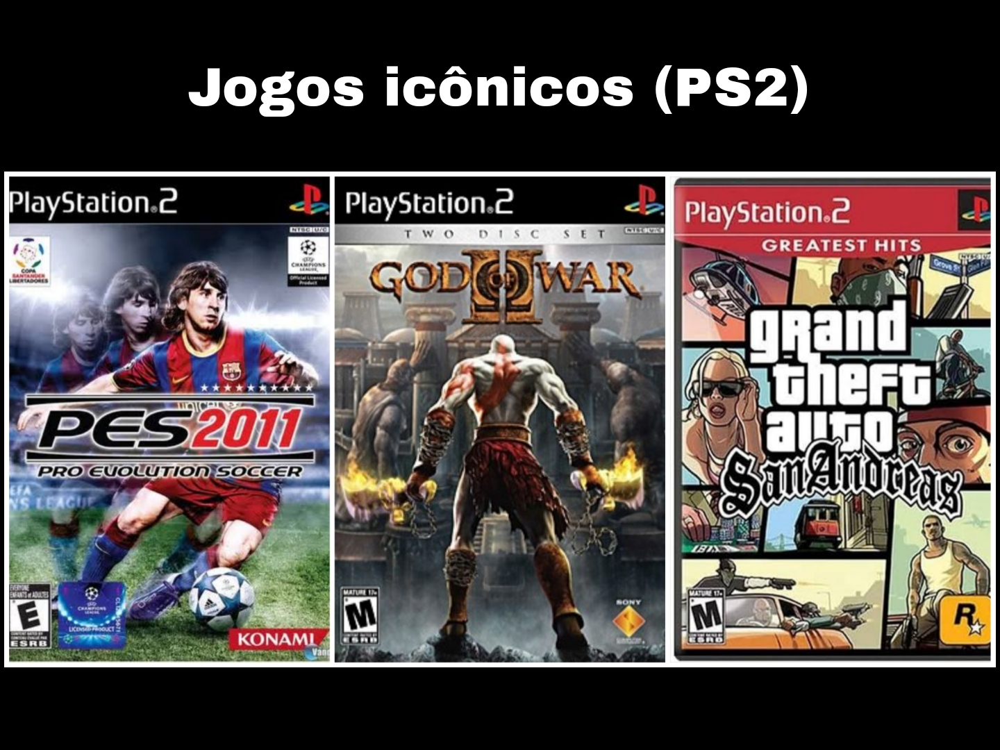
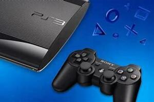
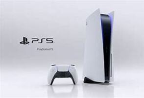

A evolução do Playstation
Breve resumo sobre a Sony
A criadora do PlayStation, fatura mais de US$ 80 bilhões ao ano e está presente em mais de 190 países. No Brasil, é querida por sua inovação, qualidade e forte presença no mundo dos games, marcando gerações com consoles icônicos como o PS2 e PS4.
PS1

Lançado em 1994, o PlayStation 1 revolucionou os games com gráficos 3D e jogos em CD. Vendeu mais de 100 milhões de unidades, marcando gerações com clássicos como Crash, Resident Evil e Final Fantasy. Foi o início do sucesso da Sony no mundo dos consoles.
Reinado: Mesmo com a chegada do PS2 em 2000, o PS1 só parou de ser fabricado em 2006, tendo um reinado de 12 anos.

PS2

Lançado em 2000, o PlayStation 2 revolucionou os games ao unir desempenho poderoso, leitor de DVD integrado e retrocompatibilidade com jogos do PS1. Seu vasto e variado catálogo atraiu todos os tipos de jogadores, com clássicos como GTA: San Andreas, God of War e Shadow of the Colossus. Resultado: mais de 155 milhões de unidades vendidas, tornando-se o console mais vendido da história.
Reinado: Mesmo com a chegada do PS3 em 2006, o PS2 só parou de ser fabricado em 2013, tendo um reinado de 13 anos.
PS3
O PlayStation 3 foi lançado em 2006 pela Sony. Vendeu cerca de 87 milhões de unidades mundialmente. Tornou-se popular por seu leitor de Blu-ray, gráficos avançados e exclusividades como The Last of Us e Uncharted. Apesar de um início difícil por causa do preço alto, recuperou-se com o tempo e firmou seu lugar na história dos consoles.
Reinado: Mesmo com a chegada do PS4 em 2013, o PS3 só teve sua produção encerrada em 2017, garantindo um reinado de 11 anos.

PS4

O PlayStation 4 foi lançado em 2013 e vendeu mais de 117 milhões de unidades, sendo um dos consoles mais populares da história. Sua popularidade se deve ao forte catálogo de jogos exclusivos, como The Last of Us Part II e God of War, além do foco em performance e jogos para jogadores hardcore.
Reinado: Mesmo com a chegada do PS5 em 2020, o PS4 continuou sendo fabricado e recebendo jogos até 2023, totalizando um reinado de 10 anos.

PS5
O PlayStation 5, lançado em novembro de 2020, já vendeu mais de 75 milhões de unidades, consolidando-se como um dos consoles mais vendidos da história. Sua popularidade deve-se ao desempenho gráfico impressionante, suporte a resolução 4K, SSD ultrarrápido para carregamentos quase instantâneos e uma biblioteca de jogos exclusivos como God of War Ragnarok. Comparado ao PS2, o PS5 trouxe avanços significativos, como ray tracing, áudio 3D e integração com serviços online robustos.
Reinado: Lançado em 2020, o PS5 rapidamente se estabeleceu como um marco tecnológico, trazendo gráficos de ponta e um SSD ultrarrápido. Apesar disso, o PS5 conviveu com a produção do PS4 até 2023, destacando a transição gradual entre gerações na história da PlayStation, segue em produção até o presente momento (2025).

PS5 Pro

O PS5 Pro, lançado em novembro de 2024, trouxe melhorias significativas em relação ao PS5 original. Com uma GPU RDNA 3 e 4, o Pro oferece desempenho gráfico superior, incluindo ray tracing aprimorado e suporte a resolução 8K. Ele também possui um SSD de 2 TB, o dobro do PS5, e memória mais rápida, garantindo carregamentos ainda mais rápidos. Enquanto o PS5 já impressionava com sua performance, o Pro eleva a experiência com gráficos mais detalhados e taxas de quadros mais estáveis.
Reinado: Lançado em 2024, o PS5 Pro elevou ainda mais o padrão tecnológico da PlayStation, com gráficos avançados, suporte a 8K e um SSD de 2 TB. Mesmo com sua chegada, o PS5 original permanece em produção, demonstrando a coexistência harmoniosa entre as versões enquanto marca a evolução da franquia no mercado até o presente momento (2025).
Até o presente momento (Abril-2025), o PS5 pro não tem nenhum jogo exclusivo, portanto não faremos o top 3 icônicos.